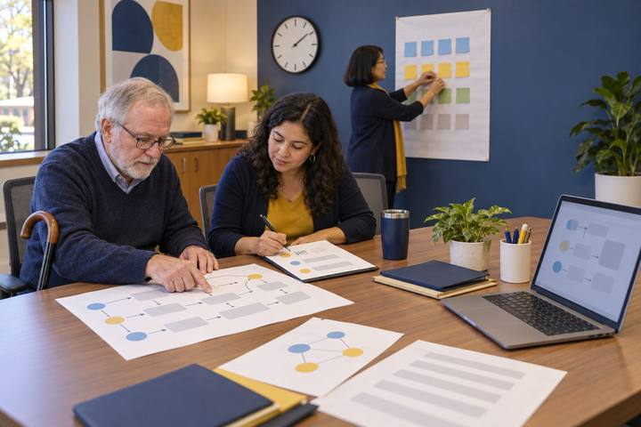
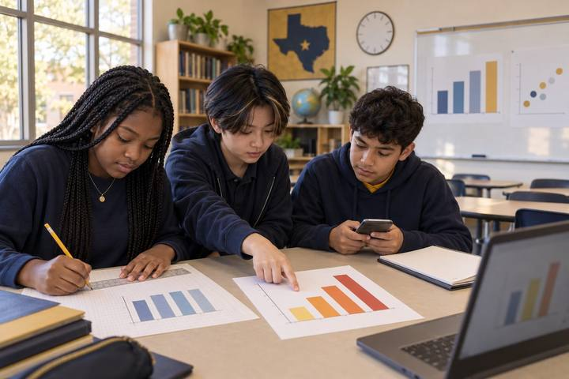
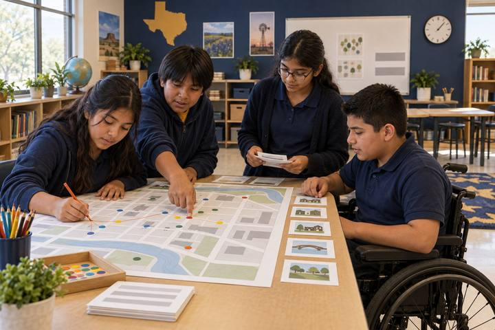

Student learningfor Grades 3–5
Ad or Info?
Students sort mock posts, videos, and headlines into ads, information, and clickbait, hunt for persuasion tricks, and then create an honest, clearly labeled ad of their own.
95 ready-to-run activities built on the TCEA Essential Learning Expectations: 53 for professional learning and 42 for K–16 classrooms. Each one weaves in Gen AI literacy, digital citizenship, or media literacy. Every activity comes with print-ready handouts, and 43 need no devices at all.

Technology use by itself is not evidence of learning. Each activity names the evidence to look for, and says plainly whether a screen earns its place.
Five roles, five key areas each. The more gold a cell, the more activities build that area; dashed cells have none yet. Choose a cell to see its activities.
New: Daily Opener a Day, a five-minute opener for every school day
Try: screen time deepfakes privacy AI hallucinations copyright and credit
Student learningfor Grades 3–5
Students sort mock posts, videos, and headlines into ads, information, and clickbait, hunt for persuasion tricks, and then create an honest, clearly labeled ad of their own.

Professional learningfor Coaches, Teachers, Leaders, Staff
A campus team digs past blame to the root causes of a fictional viral rumor and AI-edited image incident, then writes the trust and AI-use norms it will hold itself to next time.

Professional learningfor Leaders, Teachers, Faculty, Coaches
Educators put fictional AI uses in grading, proctoring, detection, and monitoring on trial, then issue rulings with conditions that could become real policy.

Student learningfor Grades 6–8, Grades 9–12
Students sort AI uses that build learning from ones that replace it, then write a SMART goal, a personal AI contract, and an honest-use log they keep for two weeks.

Student learningfor Grades 9–12
Students dissect the design features of a fictional social app, trace how each one shapes attention and belief, and redesign the feed for people instead of engagement.

Student learningfor Grades K–2
A confident robot helper says things that are sometimes right and sometimes wrong, and children become learning owners by checking each answer in two places before they believe it.

Professional learningfor Teachers, Librarians, Coaches
Teams compare paired AI outputs where only a name, a language, or a pronoun changed, then run their own fair tests and propose fixes before AI output reaches students.

Student learningfor Grades 6–8, Grades 9–12
Students read six mock AI outputs through different perspectives, find who is stereotyped or missing, and rewrite the prompts to fix it.

Student learningfor Grades 9–12, Higher Ed
Before they tap "Buy," students check the storefront, the deal, the reviews, and the payment method, and they practice exactly what to do if a purchase goes wrong.

Professional learningfor Teachers, Librarians
Teachers sit in a real community circle about group chats, AI companions, and sleep, then plan their own circle, co-create agreements, and rehearse what to say when a student tells them something online went wrong.

Professional learningfor Teachers, Faculty, Coaches, Librarians
Educators sort real classroom and faculty tasks along a human-to-AI spectrum, co-create something with AI while keeping their own thinking visible, and write the disclosure and syllabus statements that make the line clear to students.

Professional learningfor Coaches, Teachers, Librarians
A timed, listening-first protocol a coach and teacher use to redesign one upcoming lesson so students verify an AI answer or evaluate a source, and turn in proof that they did.

Professional learningfor Coaches, Librarians
Coaches plan and deliver 10-minute micro-PD sessions on one digital literacy move, get protocol-based peer feedback, and revise before a teacher ever sees it.

Student learningfor Grades 6–8, Grades 9–12
Teams use the engineering design process to solve a real school or community problem, invite AI to critique their ideas, reject what doesn't hold up, and pitch a solution with a record of what changed.

Student learningfor Grades 3–5
After their own doodles get "borrowed" without credit, students learn to credit creators, ask permission, and write an honest note whenever AI helped with their work.

Student learningfor Grades 9–12, Higher Ed
Teams read an AI study app's privacy policy like investigators, map where their data could travel, and choose settings and habits that shrink their trail.

Student learningfor Grades 9–12
Student newsroom teams race a deadline to decide which election-week tips are real, which are synthetic, and which they simply can't confirm yet.

Professional learningfor Leaders, Staff, Librarians
Campus teams design a family event where parents and kids try things together, check what AI tells them, and go home with conversations to have, not just rules to follow.

Professional learningfor Coaches, Teachers, Faculty, Leaders
Educators pick apart a fictional "it worked!" report, then design a small, honest classroom inquiry that could actually show whether an AI-supported task improved learning.

Student learningfor Grades 3–5
Teams follow a trail of paper footprints left online by a fictional fourth grader, piece together what a stranger could learn about him, and plan the footprints they want to leave.

Student learningfor Grades 3–5
Students rescue a classmate's messy pretend drive, invent a naming and folder system, use version history to recover lost work, and catch what an AI summary of their notes left out.

Student learningfor Grades 9–12, Higher Ed
Students sort real-feeling academic integrity dilemmas across courses, then write honest AI-use disclosures and process logs they would stand behind.

Professional learningfor Teachers, Librarians
A fast, argument-starting card sort where teachers decide which classroom tasks are best unplugged, which earn their screen time, and where AI adds value, and have to say why.

Professional learningfor Teachers, Librarians
Teachers take apart a tech-heavy lesson, name the evidence of learning first, and rebuild it so every tool, or no tool, has to earn its place.

Professional learningfor Teachers, Librarians, Coaches, Leaders
Educators draft 90-second, jargon-free explanations of AI concepts and test them live on colleagues playing a skeptical grandparent, a second grader, or a school board trustee.

Professional learningfor Teachers, Coaches, Leaders
Teachers run a glow-grow-question peer review on two AI-assisted drafts, questioning the AI's suggestions as hard as the writer's, then adapt the protocol for their own students.

Professional learningfor Coaches, Librarians, Leaders
Teams vet three fictional classroom apps through four lenses (learning value, privacy, accessibility, AI transparency) and turn the verdict into a pilot a teacher can actually run.

Professional learningfor Leaders, Staff
A selection committee weighs three fictional math platforms on evidence, assessment data, accessibility, and privacy, then tells families the honest story of the choice in plain language, in more than one language, with a real way to talk back.

Professional learningfor Leaders, Faculty, Coaches
Leadership teams start with what they value, sort draft clauses, and write a one-page generative AI guidance statement that people can actually follow.

Student learningfor Grades 3–5
Students write instructions for a classmate "robot" who follows them exactly, discover why vague prompts get surprising results, and build a recipe for clear prompts they can use with AI and with people.

Student learningfor Grades 9–12, Higher Ed
Students trace every claim and citation in a polished AI research brief and discover which ones lead somewhere and which ones lead nowhere.

Professional learningfor Leaders, Coaches
Leaders write the success story and the failure story of their own AI or tech initiative three years out, then run a pre-mortem on the failure so they can build guardrails before launch.

Student learningfor Grades 9–12, Higher Ed
Students create a short piece with AI as a prompt partner, log every suggestion they keep, change, or reject, and defend their human choices in a studio critique.

Professional learningfor Coaches, Teachers, Librarians
A tech showcase remix: teachers rotate through emerging-tech stations, including AI and synthetic media, and have to separate the vendor's claim from the learning evidence before they give a verdict.
Professional learningfor Staff, Teachers, Leaders
Staff revise five realistic messages to families and colleagues for clarity, kindness, privacy, accessibility, and translation, and learn to review an AI-drafted message before it goes out.

Professional learningfor Leaders, Coaches, Teachers
Leadership teams run a full rounds protocol on five written classroom vignettes, noting only what students do with technology and AI, then find patterns and name the next level of work for teachers, coaches, and themselves.

Professional learningfor Leaders, Staff
A fake audio clip of the principal spreads through parent groups on a Friday night, and the leadership team has two hours of game time to verify, respond, and rebuild trust.

Student learningfor Grades 9–12
Students check influencer clips, supplement ads, forum posts, and a chatbot answer about wellness by reading laterally, then decide when a question belongs with a trusted adult or clinician.

Professional learningfor Coaches, Librarians, Leaders
Coaches experience a research journal club as learners, reading a practice article with a skeptic's eye, then design their own PD series around real teacher needs and adult learning principles.

Professional learningfor Teachers, Librarians
Teachers rewrite prickly class messages, co-create norms for digital spaces the way students would, and work through what to do when a student's closest confidant is an AI companion chatbot.

Student learningfor Grades K–2
Children sort online messages into kind clicks and stop-and-tell moments, turn unkind words into kind ones, and practice asking a trusted grown-up for help.

Professional learningfor Teachers, Librarians, Coaches
Teams race to verify viral claims and an AI-written summary by leaving the page, not staring harder at it.

Professional learningfor Teachers, Coaches, Librarians
Educators run a student-eye findability test on a messy mock course, then tidy their own with consistent modules, one home for due dates, accessible files, and a check on any AI-generated materials.

Professional learningfor Leaders, Coaches
Leaders sort walkthrough notes, practice on three classroom vignettes, and rebuild their technology observation tool so it captures evidence of learning instead of counting devices.

Professional learningfor Coaches, Teachers, Librarians
A looking-at-student-work protocol that asks one question of a class set: did students actually verify what the AI told them, and how can we tell?

Professional learningfor Leaders, Coaches, Teachers
Teams audit a fictional district's school-device minutes by purpose, not just by total, and draft grade-band guidance that protects unplugged time and asks for evidence of learning.

Student learningfor Grades 6–8, Grades 9–12
Students work through real-world sharing dilemmas, audit account security and privacy habits, and write a personal safety plan they explain to a family member.

Professional learningfor Coaches, Teachers, Leaders, Staff
A fast sort and a de-identification drill so data teams know exactly what student information must never go into an AI tool, and how to ask the question they need without it.

Student learningfor Grades K–2, Grades 3–5
Young learners hear friendly pretend news about helpers that might exist someday, draw or act out one helpful thing and one tricky thing, and vote on a class rule for the helper.

Student learningfor Grades 3–5, Grades 6–8
Students build a paper "word-guessing machine" from sentence cards, watch it invent a confident false fact about a lake, and find out why a longer prompt helps but never makes a chatbot know things.

Professional learningfor Coaches, Teachers, Leaders
A PLC builds trust first, then sorts real shared-planning dilemmas and drafts its own norms for AI use: disclose it, check it, and never put student data in a prompt.

Student learningfor Grades 3–5
Students rank passwords from weak to strong, build silly-but-strong practice passphrases, and sort tricky moments into keep it secret, share with a trusted grown-up, or tell a grown-up now.

Professional learningfor Coaches, Leaders, Librarians
Coaches take apart a one-size-fits-all AI PD day and rebuild it as a choice menu, grounded in a real needs assessment, adult learning principles, and teaching strategies that already work.

Student learningfor Grades 9–12, Higher Ed
Students write custom instructions that turn an AI chatbot into a coach that makes them think, then stress-test it and judge it by evidence, not vibes.

Professional learningfor Teachers, Coaches, Librarians
Teachers design AI-supported versions of one reading task for different learners, then judge every version against the same learning target, a fact check, and a privacy line.

Student learningfor Grades 3–5, Grades 6–8
Teams sort fourteen texts, emails, and game-chat messages into safe, scam, or check-another-way, and learn why AI-polished scams make spelling mistakes a useless clue.

Student learningfor Grades 3–5
Students investigate described photos that were cropped, edited, or made with AI, and learn two fact-checker moves that work better than staring: Stop, and Find better coverage.

Student learningfor Grades 9–12, Higher Ed
Student teams research, draft, and pitch an AI and technology-use policy proposal to a mock board, and must pass the same five-question check real leaders use.

Student learningfor Grades 6–8, Grades 9–12
Teams rescue a cluttered slide deck, making it clear, accessible, honestly sourced, and upfront about AI images, then pitch the revised version in 60 seconds.

Student learningfor Grades 6–8, Grades 9–12
Students read a clearly fictional 1911 letter, then catch an AI summary that changes dates, invents a quote, turns a rumor into a fact, and erases the neighbors who helped.

Student learningfor Grades K–2
Children walk to a red, yellow, or green "traffic light" to sort personal information, then practice what to say when a game or talking computer asks for it.

Professional learningfor Leaders, Coaches, Faculty
Leaders take apart eight mock dashboard panels, including an AI-generated "insight," to practice asking what the data shows, what it can't show, and who could be harmed by a hasty conclusion.

Student learningfor Grades 6–8, Grades 9–12
Students hunt for the classic clues of AI-made images and cloned voices, discover how often those clues mislead, and learn to check the source instead.

Student learningfor Grades K–2
Young detectives move, wiggle, or freeze to decide whether a picture or story is real, pretend on purpose, or changed to look real, and learn to ask a grown-up when they can't tell.

Professional learningfor Teachers, Librarians
A gallery walk through ten mock viral posts (deepfakes, cheapfakes, out-of-context photos, and a few real ones) that teaches teachers to check where media came from instead of squinting for glitches.

Student learningfor Grades 6–8, Grades 9–12
Students sort real-world remix decisions using copyright, Creative Commons, and fair use, then write credit lines that include honest notes about AI help.

Professional learningfor Teachers, Librarians, Coaches
Tables take one plausible future headline about AI in school, map its ripples out three rings deep, and then work backward to what they should start doing this semester.

Student learningfor Grades K–2
Children train a pretend robot with picture-word cards and discover that AI makes guesses from patterns, and that a guess can be wrong.

Student learningfor Grades K–2
Children sort everyday activities, notice how their bodies and feelings respond to sitting still and to moving, and make a family balance plan, learning that screens aren't bad and choices matter.

Professional learningfor Teachers, Librarians, Leaders, Staff
Families sort everyday screen moments by purpose, learn in plain language what the Texas phone law does and doesn't cover, and start a family media agreement that fits their own home.

Professional learningfor Teachers, Librarians
A fishbowl Socratic seminar where the "text" is a chatbot's confident, partly wrong answer, and the chatbot's second answer is worse, so teachers practice the questions that make students think instead of accept.

Student learningfor Grades 6–8, Grades 9–12
Students turn a true present-day tech trend into a plausible future headline and lede, then trade and fact-check each other's work for accuracy and clickbait.

Student learningfor Grades K–2, Grades 3–5
Children role-play with a pretend talking speaker to learn that voice helpers listen for a wake word, may keep what they hear, answer by guessing, and sometimes need a grown-up instead.

Student learningfor Grades 6–8, Grades 9–12
Students turn a lunch survey into a spreadsheet or paper grid, compute counts and averages, build an honest chart, then catch and fix charts (and an AI chart suggestion) that mislead with a truncated axis or a cherry-picked range.

Professional learningfor Coaches, Teachers, Leaders
Coaches and teachers design a short, privacy-safe student survey on devices, AI, and wellbeing, then read returned results with Notice-Wonder-Next and act on what students said.

Student learningfor Grades 3–5
Teams plan a real group project by matching each job to the right tool, or no tool at all, defending their choices, and setting goals they can track together.

Professional learningfor Teachers, Librarians
Teams design a solution to a local community problem by hand, invite an AI chatbot to tear it apart (as critic, never author), decide which critiques to accept, disclose the AI's role, and pitch to a panel.

Professional learningfor Coaches, Leaders
A coach and principal analyze a coaching-time audit together, including the drift that AI and tech rollouts cause, and write a one-page agreement before the coaching cycle begins.

Student learningfor Grades 6–8, Grades 9–12
Students play a card-based recommendation engine by hand and watch their feed shrink to a few topics, then design ways to take it back.

Professional learningfor Leaders, Coaches
Leadership teams role-play the planning meeting for a campus-wide platform rollout and discover that the questions that matter most come after "should we buy it?"

Professional learningfor Leaders, Librarians, Coaches, Teachers
Teams interrogate a fictional AI vendor's glossy fact sheet, sort the questions that actually matter, and build a transparency and accountability checklist they can use on real tools.

Professional learningfor Teachers, Librarians, Coaches, Faculty
Educators become a tiny language model with paper slips and a cup, and discover firsthand why fluent AI text can be confidently wrong.

Professional learningfor Teachers, Librarians
Teachers climb eight rungs of prompts for the same classroom task, predict each mock AI output before reading it, and weigh what every added detail gains and what it costs.

Professional learningfor Coaches, Teachers
Coaches role-play a full listen, co-plan, model, measure, adjust cycle on one familiar problem: students finish the digital work but say very little.

Professional learningfor Coaches, Teachers, Librarians
Instead of a demo and a vote, teacher teams test an emerging AI feature inside a GRITS lesson-study loop, watch students rather than the tool, and decide from student evidence.

Professional learningfor Coaches, Leaders
Coaches score a human-written and an AI-drafted feedback note on the same lesson transcript, then set the ground rules for when AI belongs in observation, if it belongs at all.

Professional learningfor Leaders, Faculty, Coaches
Leaders trace an AI product's headline result back to the study behind it, read the terms of service line by line, and design the local pilot that would actually answer "Does it work here?"

Professional learningfor Teachers, Librarians, Coaches
Science teachers split confident AI explanations into checkable claims, verify each with two independent sources, and leave with a 15-minute workshop to teach the routine to colleagues.

Professional learningfor Coaches, Leaders
Coaches code a consented, timestamped classroom clip for questioning and wait time, test an AI summary against the timestamps, and write feedback a teacher can act on tomorrow.

Professional learningfor Teachers, Librarians
Teachers read a mock app privacy policy the way a 12-year-old would, then audit the real tools in their own classroom and decide what to keep, change, or replace.

Student learningfor Grades 6–8
Students plot a fictional teen's Saturday from location clues on a town map, discover how much a trail of pings reveals, weigh safety against privacy, and write a location settings checkup plan.

Professional learningfor Leaders, Staff, Faculty
Leaders walk a proposed homework-and-AI-tutor initiative through the lives of ten fictional families, map every barrier they hit, and turn the map into policy.

Student learningfor Grades K–2
Children discover that every picture, video, song, and game was made by someone for a reason, and practice asking "Who made this, and why?"

Student learningfor Grades 9–12, Higher Ed
In a structured academic controversy, students argue both sides of an open question: is it fair for AI tools to learn from artists' work, and who gets credit for what they make?

Professional learningfor Teachers, Librarians
Teachers audit eight mock AI-generated images and texts for who shows up, who doesn't, and who gets flattened, then fix one with human judgment and Universal Design for Learning (UDL).
Daily openerfor Grades K–2
I asked, "What is your favorite food?" One helper said, "Pizza, because my grandma makes it on Fridays!" The other said, "Many people like pizza." Which one was a robot?
Daily openerfor Grades K–2
Our pretend robot only ever saw red apples. Now it sees a green apple. What will it guess, and why?
Daily openerfor Grades K–2
A robot helper said, "Cats have wings and can fly to the moon!" Is that a fact or fake?
Daily openerfor Grades K–2
A game asks you some questions. Which ones are OK to share, and which ones stay secret?
Daily openerfor Grades K–2
Tomás sends a message: "Your drawing is SO cool!" Then Pip sends: "Your drawing is ugly." Which one is a kind click?
Daily openerfor Grades K–2
Picture a puppy with rainbow wings flying over a school. Is it real, pretend on purpose, or changed to look real?
Daily openerfor Grades K–2
A cartoon tiger on a cereal box says, "Eat Zoomy O's every day!" Who made that tiger, and why?
Daily openerfor Grades K–2
I will say things kids like to do. Stand up if it moves your body. Sit down if you sit still.
Daily openerfor Grades K–2
A talking speaker can help with some things. For which ones should you ask a grown-up instead?
Daily openerfor Grades K–2
Pretend a robot helper comes to our class someday. Draw one helpful thing it does, and one rule it must follow.
Daily openerfor Grades K–2
Our class is making a picture of our school garden. Would you rather each draw alone, or all add to one big drawing together?
Daily openerfor Grades K–2
A password is like a toothbrush: it's just for you. Stand up if it's OK to share your password with this person.
Daily openerfor Grades K–2
You are playing a game and a box pops up: "You won a prize! Tap here!" What do you do?
Daily openerfor Grades K–2
A cartoon bunny says, "Crunchy Stars cereal makes you run faster than a car!" Fact or fake?
Daily openerfor Grades K–2
Mia drew a cat. Leo put Mia's cat on the class board and said, "Look what I made!" Was that fair?
Daily openerfor Grades 3–5
Finish these out loud: "Peanut butter and ___." "Once upon a ___." How did your brain know what comes next?
Daily openerfor Grades 3–5
A chatbot says: "Lake Marigold in Pinecrest County is the deepest lake on Earth. Scientists agree." Fact or fake, and how would you check?
Daily openerfor Grades 3–5
Write three instructions for drawing a smiley face. Your partner is a robot who draws exactly what you say, nothing more.
Daily openerfor Grades 3–5
Sort these practice passwords from weakest to strongest. None of these are anyone's real password.
Daily openerfor Grades 3–5
Ravi wants to post: "Home alone till 6! Here's a pic of my front door on Birch Lane." Stand up if you'd be OK with a stranger seeing that post.
Daily openerfor Grades 3–5
Sort these into ad, information, or clickbait.
Daily openerfor Grades 3–5
A post shows a fish bigger than a boat, caught at Willow Creek Park: "Real photo, taken yesterday!" Before you share it, what are your steps?
Daily openerfor Grades 3–5
Jada put a drawing by an artist named Lu Chen on her poster. Rafael used an AI tool to brainstorm his poster's title. What should each of them do?
Daily openerfor Grades 3–5
Your team is making a poster about recycling. Would you rather make slides on devices, or one big chart-paper poster together?
Daily openerfor Grades 3–5
In a game chat, Nico writes to Sam: "lol your video is so bad." Rewrite it so it's honest, kind, and helpful.
Daily openerfor Grades 3–5
Think about your screen time and your green time this week. Write one small goal you can check off by Friday.
Daily openerfor Grades 3–5
You need to find your plant journal next month. Which file name will help you most?
Daily openerfor Grades 3–5
Fact or fake: "A smart speaker only turns on when you say its wake word, and its answers are always right."
Daily openerfor Grades 3–5
A sorting AI learned "fruit is red or yellow" from pictures of apples and bananas. Stand up if you think it will call a lime a fruit.
Daily openerfor Grades 3–5
Pretend headline from the future: "Robot Helpers Now in Every Classroom in Maple Hollow." What's one good thing and one tricky thing?
Daily openerfor Grades 6–8
Picture this photo, posted during a storm: a shark fin cuts through brown floodwater on Main Street in Cedar Bend, right past a stop sign. The caption says "THIS IS HAPPENING NOW. Share before they delete it!" What do you notice, what do you wonder, and what would you check before you believed it?
Daily openerfor Grades 6–8
A student asked a chatbot for help with a geography project. It answered: "Lake Pembrook is the deepest lake in Texas, at 912 feet. It was formed by a meteor about 10,000 years ago." Fact or fake?
Daily openerfor Grades 6–8
Sort these five AI uses into "builds my learning" or "replaces my learning": 1) asking AI to quiz me on vocabulary, 2) pasting in my essay question and turning in the answer, 3) asking AI to explain fractions a different way, 4) having AI write my reading log, 5) asking AI what I might have missed in my science notes.
Daily openerfor Grades 6–8
A message pops up in your game chat from "Mod_Zyra": "Congrats! You won 5,000 free gems for being a top player. Log in at gemdrop-rewards.co in the next 10 minutes or they expire." What do you do?
Daily openerfor Grades 6–8
Would you rather share your live location with your friends all the time so it is easy to meet up, or keep it off and text people where you are when you need to? Either way, who else might be able to see where you go?
Daily openerfor Grades 6–8
Headline: "HOMEWORK BANNED IN FERNWOOD SCHOOLS!" First sentence of the article: "A Fernwood district committee will spend the next year studying how much homework students get and may suggest changes." Does the headline match the story?
Daily openerfor Grades 6–8
Nico watched one skateboarding video all the way to the end. Now his feed is almost all skateboarding. Draw the rule the app might be following as a flowchart or an "IF ... THEN ..." sentence.
Daily openerfor Grades 6–8
Your group is making a two-minute video about a problem at school. One teammate says, "Let's just have AI write the whole script. It'll be done in a minute." Another says that feels like cheating. How should your team decide?
Daily openerfor Grades 6–8
A teacher asked an image generator for "a scientist at work" four times. Every picture showed an older man with white hair and a lab coat, standing in a lab. What do you notice? Who is missing?
Daily openerfor Grades 6–8
A classmate posts their project slideshow in the class forum. Someone comments: "lol this is so boring, did a 3rd grader make this?" Rewrite the comment so it is honest, kind, and actually helpful.
Daily openerfor Grades 6–8
Think about yesterday. When did a screen help you, and when did it take time you wanted for something else? Write one small, realistic screen goal for this week and how you will know you met it.
Daily openerfor Grades 6–8
Stand up if the statement is true for you, then sit back down. 1) I have believed something online that turned out to be false. 2) I have checked a second source before sharing. 3) I have used an AI answer without checking it. 4) I know one habit I want to get better at.
Daily openerfor Grades 6–8
Here is a weak prompt: "Tell me about volcanoes." With a partner, rewrite it so an AI would help you study for Friday's quiz on how volcanoes form, without just doing the work for you.
Daily openerfor Grades 6–8
Picture a bar chart titled "TACOS WIN BY A LANDSLIDE!" The taco bar towers over the pizza bar. But look closely at the side: the numbers start at 48, not 0. Tacos got 52 votes and pizza got 49. Is "landslide" fair?
Daily openerfor Grades 6–8
Sort each remix: 1) using a song you found online as background music in a video you post publicly, 2) using a photo marked with a Creative Commons license and crediting the creator, 3) drawing your own version of a cartoon character for your notebook, 4) posting an AI-made image as if you drew it.
Daily openerfor Grades 9–12, Higher Ed
An AI research brief says: "Teens who study with music score 40% higher on memory tests (Harlow & Min, 2021, Journal of Adolescent Learning Science, vol. 14)." It looks polished and specific. Fact or fake?
Daily openerfor Grades 9–12
The night before the Riverton mayoral election, a voicemail spreads in group chats. It sounds exactly like candidate Dana Whitfield: "Because of the storm, voting for my supporters has moved to Wednesday." Your cousin asks if they should forward it.
Daily openerfor Grades 9–12, Higher Ed
Jaylen used an AI chatbot to brainstorm three possible thesis statements for a history essay, picked one, rewrote it, and wrote the whole essay himself. His teacher allows AI for brainstorming if you disclose it. Write the one-sentence disclosure Jaylen should put at the end.
Daily openerfor Grades 9–12, Higher Ed
Would you rather use StudyNest AI, which is free but reads every document in your cloud drive to "personalize your help," or QuietNotes, which costs a few dollars a month and says it deletes your files after each session?
Daily openerfor Grades 9–12, Higher Ed
Picture an online store called SoleVault Outlet: limited sneakers at 80% off, a timer counting down from 9:59, hundreds of five-star reviews all posted the same week, and a checkout page that only accepts gift cards or a payment app transfer. What do you notice, and what would you check, in order?
Daily openerfor Grades 9–12
Pick one feature of a social app: infinite scroll, autoplay, streaks, or like counts. With a partner, explain what it is designed to make you do, then redesign it so it serves people instead of engagement.
Daily openerfor Grades 9–12, Higher Ed
Priya typed a detailed prompt into an image generator, picked the best of 30 results, edited the colors, and won the Lakeview art contest. Who deserves the most credit for the image?
Daily openerfor Grades 9–12
Big chemistry test tomorrow. Would you rather use an AI that gives you correct answers to the practice problems instantly, or one that only asks you questions and hints until you solve them yourself?
Daily openerfor Grades 9–12
Your school board asks students for one sentence to include in the new AI-use policy. With a partner, draft that sentence, then ask: who might be left out or hurt by it?
Daily openerfor Grades 9–12
A fitness influencer, Coach Rhys, posts: "FocusFuel gummies boost your memory 300% before exams. Doctors don't want you to know this. Link in bio for 20% off!" Fact or fake?
Daily openerfor Grades 9–12, Higher Ed
Your team of three is making a short documentary, and AI is your "fourth teammate." Sort these jobs: brainstorm interview questions, choose whose story to tell, write captions for accessibility, decide the film's main message, suggest music, fact-check a statistic.
Daily openerfor Grades 9–12
Imagine a scholarship committee or a future boss searches your name. They find a joke you posted in ninth grade that made fun of someone. Write what you would want them to understand, and one thing you would do now to shape what people find.
Daily openerfor Grades 9–12
Stand if it's true for you, then sit. 1) I have opened an app just to keep a streak alive. 2) I have lost track of time on autoplay. 3) I have turned off a notification on purpose. 4) I have a time of day that's screen-free. Then set one small goal for this week.
Daily openerfor Grades 9–12
From a fictional 1911 letter: "The mill fire began after dark. Mr. Okafor and the Ruiz family carried water until dawn. Some say a lantern tipped, but no one saw it." An AI summary: "The mill fire started at 6 p.m. when a lantern tipped over. The mayor led the rescue." Which change matters most?
Daily openerfor Grades 9–12
On a device and account you already use, find the ad settings or "why am I seeing this ad" page. Look at the interests it has guessed about you. How accurate is the profile?
No activities match these filters. Clear a filter or two, or try a broader search word.